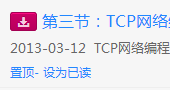

最重要的一点，为了能做到自动刷新，我不得不在本地存储你的用户名密码，在2.0.1版本中我对密码进行了加密，
但这也只是防君子不防小人，只要能控制你的电脑，无论怎样的技术手段都是无法保护你的密码的TT。
你面前的浏览器其实记住了你很多的信息，不光是我的这个插件 > < 。
因此请务必注意不要让他人接触到你的电脑以及浏览器，出借电脑时候记得退出登录~ ^_^


通知提示
通知的符号是紫色的喇叭。 红色的点表示被置顶了。
作业提示
作业的符号是蓝色的笔，根据剩余天数的不同会有不同的颜色。(红、橙、蓝）
已经提交的作业
已经提交的作业是绿色的对勾，表示已经不用再考虑它了~
过期作业
过了提交日期的作业是灰色的对勾或笔，灰色告诉你想也没有用了。。。

课程文件
课程文件如图所示，点击标题即可下载。若不想下载可点击设为已读即可。
切换面板
在左上角可以切换 主页、作业、通知、文件 四个面板。
课程页面
点击左侧课程名字，可以展开该课的各页面链接，方便快速进入。